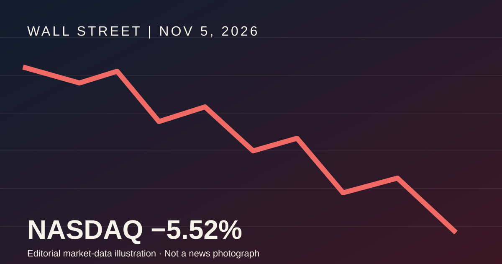

2026年11月6日 · 美国财经深度分析 · Weston Life
美股遭遇“黑色星期四”：纳斯达克暴跌5.5%，一场从选举、石油到人工智能的连锁危机

配图：Weston Life 原创数据插画，非新闻现场照片
一、昨天究竟跌得多严重？
这不是普通的获利回吐。纳斯达克跌入技术性调整区间，半导体板块跌幅超过12%，英伟达下跌约9.3%，AMD下跌约17.3%，道琼斯指数单日损失约1,833点。而就在前一天，市场还因民主党赢得国会中期选举而大幅上涨。为什么市场一天之内就从庆祝变成恐慌？
二、真正的原因不是一个，而是六个因素叠加
第一，民主党胜选改变了人工智能产业的政策预期。
11月3日中期选举后，民主党赢得国会两院控制权。市场开始担心，对大型数据中心的环保、电力消耗、建设审批和市场竞争监管可能加强。尤其是在得克萨斯州和佐治亚州，反对数据中心快速扩张的候选人取得胜利，让投资者重新评估未来AI基础设施的建设速度。但必须强调：监管风险上升不等于已经出台全国性数据中心禁令。市场下跌反映的是预期，而不是既定政策。
第二，AI投资过大，资本市场开始追问利润在哪里。
过去两年，市场不断为AI芯片、服务器、电力设施、数据中心建设支付高估值。问题在于，资本开支增长得很快，但最终利润兑现需要时间。部分大型科技企业还开始依靠债务融资扩大AI投资。当投资者开始怀疑投资回报率，最先受到打击的自然是此前涨幅最大、估值最高的半导体与数据中心股票。这次暴跌反映出市场正在重新定价AI产业，而不仅仅是对选举结果的反应。
第三，高油价让美联储陷入两难。
11月5日，布伦特原油上涨，油价接近每桶97美元。中东战争仍然是能源供应的重要不确定因素。油价高企会提高运输、制造、电力和生活成本，进一步增加通胀压力。与此同时，高利率会提高企业融资成本，并压低远期盈利的估值，因此对科技股尤其不利。需要注意：股市暴跌当日，美债收益率实际上有所回落，不能把收益率上涨当成当天已发生的事实。
第四，高通财报成为半导体抛售的直接导火索。
高通财报后股价承压。投资者随即担心芯片需求的增长速度，抛售扩散至英伟达、AMD、英特尔、美光等企业。不过，高通的手机芯片需求与英伟达的数据中心GPU需求并不完全相同，因此不能简单推断整个半导体产业需求已经全面恶化。
第五，市场此前的仓位过于集中。
大量资金集中在AI、半导体、数据中心及相关电力设备股票。当这些热门交易同时转弱，基金减仓、风险控制和杠杆调整会互相强化。11月5日，VIX恐慌指数升至28附近，显示投资者迅速提高了对市场下跌风险的防范。
第六，市场正在重新评估战争、财政和经济增长的组合风险。
战争推动能源成本上升，通胀可能迫使利率维持高位，融资成本又影响企业投资。与此同时，国会政治格局改变增加了财政和监管政策的不确定性。这是一条风险传导路径，并不是说每个环节都已经发生了不可逆转的恶化。
三、暴跌之后，哪些股票最值得关注？
| 股票或板块 | 昨日影响与后续关注点 |
|---|---|
| NVDA、AMD、MU | AI芯片估值重新调整，重点看订单与资本开支 |
| INTC | 同时承受半导体板块抛售及自身转型风险 |
| MSFT、GOOGL、AMZN | 重点关注AI投入能否转化为利润 |
| TSLA | 受到政治、监管和成长股估值压力影响 |
| IREN、数据中心股 | 对融资成本、建设政策和AI投资预期高度敏感 |
| QQQ、SOXL、TQQQ | 科技股波动被集中体现，杠杆ETF风险更大 |
| CVX、能源股 | 高油价可能支持收入，但仍受整体市场情绪影响 |
昨日市场并非所有股票都下跌。AppLovin凭借强劲财报和回购计划逆势上涨，说明资金并未完全退出股票市场，而是在重新选择能够兑现盈利的企业。
四、接下来股市还会继续跌吗？
需要观察三个情景，而不能因为一天暴跌就断言熊市已经开始。
情景A：技术性反弹
如果油价回落、就业数据支持通胀降温、AI企业订单仍然强劲，市场可能出现明显反弹。但反弹不等于已经见底。
情景B：持续震荡和估值调整
如果利率维持高位、AI监管前景不明，纳斯达克可能反复震荡，资金逐渐从高估值科技股转向现金流稳定的企业。
情景C：更深的系统性下跌
如果油价继续大涨、美联储进一步加息，同时AI投资出现实质性缩减，科技股可能面临第二轮下跌，风险也可能扩散至其他行业。
五、Weston Life 的结论
11月5日的暴跌，本质上是华尔街对“高油价、高利率、高AI估值”三重风险的一次集中重新定价。民主党中期选举胜利改变了监管预期，高通财报加剧了半导体担忧，AI巨额资本开支的盈利前景受到质疑，而高利率与战争风险进一步放大了抛售。但这并不意味着人工智能产业已经衰退。真正需要区分的是：AI长期需求是否继续增长，以及投资者此前给予相关股票的估值是否过高。接下来的关键不是市场能否反弹一天，而是AI订单、企业盈利、能源价格与美联储政策能否重新形成稳定的预期。
新闻来源与数据说明
市场收盘数据及主要背景：Associated Press；Reuters；Yahoo Finance。原因分析与未来情景为编辑判断，不构成投资建议。